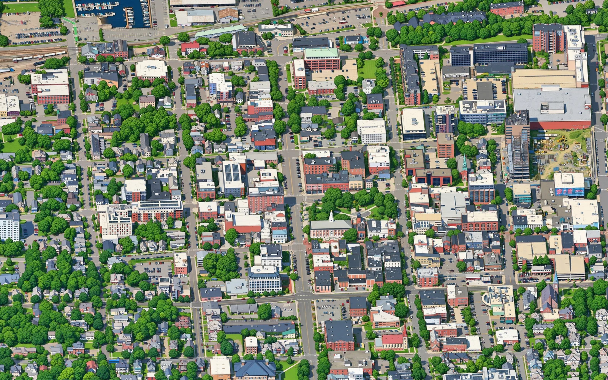

Isometric Burlington
How it was made, and what's wrong with it
I didn't draw this map. An AI image model did, one block at a time, and I spent my evenings getting it to behave. Here is exactly what that means, so you can decide for yourself what it's worth.

Who did what
- photographed Burlington from the air and built the 3D model every picture starts from.
- A camera I set up
- looks at that model from 30 degrees up, from four sides, and takes 458 pictures that line up to the pixel. One pixel is 23 cm of city.
- A teacher model
- redrew about 400 of those pictures as illustrations: flat colour, dark outlines, a 1990s city-builder look. Automatic checks threw out the ones that moved a building or invented a lake.
- A student model
- the open-source Qwen-Image, learned the style from those pairs and then drew all of Burlington, South Burlington and Winooski, four times over.
- Me
- chose the area, the camera and the look, decided what counted as a failed drawing, threw out and redid the worst blocks, and built the map you move around in: the turning, the real sunset, the weather, the buses and the planes.
I'm not a software engineer, and I'm not an illustrator. I wrote almost none of the code by hand either. I directed AI tools the whole way through, the same way I'd brief a contractor.
What's wrong with it
A neighbour on r/burlington put it better than I could: the charm wears off when you zoom in and see mushy textures and cars melting on the streets.
That's fair, and it's worth explaining.
- The cars melt. Google's 3D model turns every parked car into a soft blob, and the drawing model faithfully inks the blob. Fixing it means redrawing the map with the streets cleaned up first.
- It goes soft when you zoom far in. The drawing has a real size, 23 cm per pixel. Past that you're enlarging it, like holding a magnifying glass to a printed poster. The street names and labels that appear up close are drawn fresh at any size, so they stay sharp.
- Small details are invented. Signs are sign-shaped, not readable. A window count may be off. Your porch might be the wrong colour. It's an illustration of the city, not a survey of it.
- It's a snapshot. Google's imagery is a year or more old, so new buildings are missing and gone ones remain.
What a hand-drawn map has that this one doesn't is a person deciding, building by building, what matters. I can't fake that with pixels. Where I can add it is in the choosing: the places picked out on the map and the notes on them are mine.
Credit where it's due
The method isn't mine. I followed Isometric Toronto by John Fewell, who followed Tiny London by Boris Starkov, who built on Isometric NYC by Andy Coenen. Each of them wrote down how they did it, which is the only reason someone like me could.
3D imagery © Google, via Cesium ion. Drawn with Qwen-Image. Map data and search © OpenStreetMap contributors. Weather from the National Weather Service. Bus schedule from Green Mountain Transit. Flights from adsb.lol (ODbL). A non-commercial hobby project.
Tell me what's wrong on your street
If the map gets your block badly wrong, or there's a place that deserves a note, I'd like to hear it. The longer story of building this is on my blog, morgz.org.